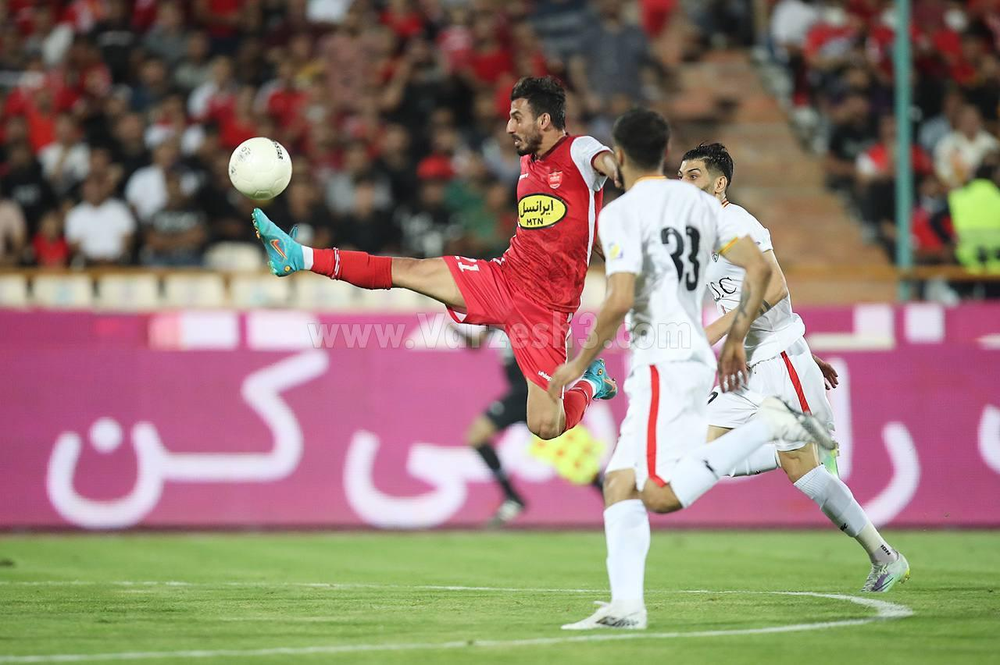
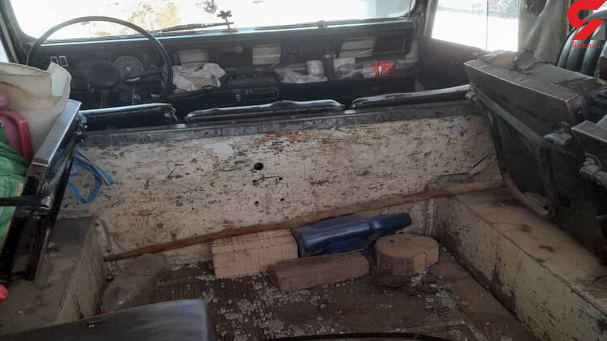

شیمی درمانی خوراکی یا تزریقی، کدامیک موثرتر است؟

یک متخصص رادیوتراپی آنکولوژی با بیان اینکه شیمی درمانی طبیعتا روی
بافتهای بدن که در حال رشد هستند تاثیر بیشتری دارد گفت: امروزه تلاش
زیادی برای تبدیل داروهای تزریقی به خوراکی در حال انجام است ولی برخی
از داروها از طریق خوراکی نمیتوانند جذب خوبی را داشته باشند و به
دلیل همین ضعف، استفاده از داروهای شیمی درمانی تزریقی از طریق عروق
هنوز در الویت اول درمان بیماران سرطانی قرار دارد .
حقیقت تلخی که یحیی و پرسپولیس متوجه شدند!

پرسپولیس بازی را با سیستم مشابه هفته قبل و همان نفرات آغاز کرد، اما
ابتدا احساس شد میل شدید کشاندن بازی به جناحین و ارسال های مکرر در
این تیم کمتر شده است. البته تیم جواد نکونام نیز مطابق انتظار اغلب
دقایق با بلوک دفاعی عمیق در میدان ظاهر شد و حتی بارها در نیمه دوم
شاهد بودیم که 11 بازیکن این تیم در زمین خودی حضور دارند. اما انتظار
از یحیی گل محمدی و تیمش این بود که آرایشی مشابه این سبک بازی تیم
نکونام را در زمین پیاده کنند. اما مطابق بازی سوپرجام، پرسپولیس در
خلق موقعیت گلزنی برابر این سبک ناکام بود و این می تواند مهم ترین ضعف
یک تیم مدعی محسوب شود.
تیراندازی قاچاقچیان به جنگلبانان بهشهر

قاچاقچیان چوب به محض شنیدن صدای خودروی جنگلبانی خود را در تاریکی شب
مخفی و همزمان با تفنگ به سمت خودروی ماموران شلیک کردند که دو گلوله
به خودرو اصابت کرد. سرهنگ ذکریایی ادامه داد: شیشهها و درب خودرو در
جریان این تیراندازی تخریب شد اما خوشبختانه به ماموران آسیبی وارد
نشد. فرمانده یگان حفاظت منابع طبیعی و آبخیزداری مازندران- منطقه ساری
گفت: عاملان تیراندازی با استفاده از تاریکی شب متواری شدند اما پرونده
قضایی برای این حادثه تشکیل و چند مظنون شناسایی شدند که در حال بررسی
است. او با بیان اینکه متجاوزان به عرصههای طبیعی از پارسال تاکنون ۱۷
مامور یگان حفاظت از منابع طبیعی را با سلاح سرد و گرم مجروح کردند،
گفت:جریمههایی که برای قاچاقچیان چوب در نظر گرفته شده است به هیچ وجه
بازدارنده نیست و همین عامل باعث جسارت قاچاقچیان برای تجاوز به
عرصههای جنگلی میشود